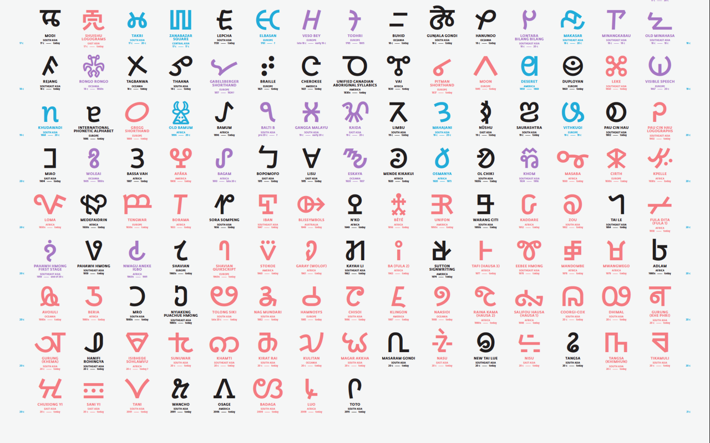

SPECIAL OFFER: Make a Donation of $50 or more and receive a limited run Unicode poster! CLICK HERE for more information!
IMPORTANT: Be sure to also email gifthelp@berkeley.edu, stating you would like to re-allocate the donation from the Linguistics Annual Fund to the Script Encoding Initiative (fund number FU1226000). Please cc dwanders@berkeley.edu, so we can confirm the funds are properly allocated.
You will receive official acknowledgement of your contribution, and our heartfelt thanks!
If you need help with the donations process, please send us an email, or write to the address given below.
You can also make a donation to the Script Encoding Initiative by calling UC Berkeley Gift Services at 510.643.9789, stating that the donation should go to Script Encoding Initiative (fund number FU1226000)
Personal Checks (in U.S. dollars) should be made out to "UC Regents", with "Script Encoding Initiative" written on the memo line, and sent to:
Script Encoding Initiative c/o Deborah Anderson University of California, Berkeley Department of Linguistics 1203 Dwinelle Hall #2650 Berkeley, CA 94720-2650 USA
If a letter accompanies the check, it should specify that the money is a "gift." Donations are tax-deductible in the US within the limits as prescribed by law (see IRS Publication 526). Two and one-half percent (2.5%) of donations go automatically to the campus Development Office, as is usual for gifts to the University of California at Berkeley.
In-kind contributions are also helpful. SEI is in need of volunteers, as mentioned on our home page.
Donations to SEI help support SEI work. Funds are used primarily to pay script encoding specialists and graduate students to do research, and write script proposals on a per-script basis. Funding also covers research-related travel, administrative costs, and website maintenance. SEI's progress web page gives an overview of project achievements.
Input is needed from specialists on any outstanding scripts. This can be in the form of (a) comments on outstanding script proposals, (b) information in support of an ongoing proposal, (c) letters in support of a specific proposal, or (d) actual writing of a proposal.
The full list of unencoded scripts is in the alpha-script-list. The type of feedback needed by scholars and users is in the list of Proposal Questions.
If you would like to write a letter of support for a specific proposal, please email us.
(c) If you would like to write a proposal, please review the Unicode guidelines, look through some of the proposals found on Michael Everson's "Papers Formally Submitted to the UTC and ISO/IEC 10646 JTC 1/SC2/WG2" or those on Anshuman Pandey's "Digital Standards for South Asian Writing Systems," then send an email to Deborah Anderson.
If you are new to Unicode, it is advisable to read the beginning chapters of the Unicode Standard. If you intend to become involved in writing proposals, be sure to review the Unicode Consortium Policies, and Proposal Guidelines.
Participation from experts on specific scripts as well as monetary support is sought for this project.
Volunteers who are willing to help pen funding proposals would also be greatly appreciated.
If you have a particular interest in or information about an unencoded script, please let us know!
If you would like to volunteer in our fund-raising efforts (especially to write funding proposals), please contact Deborah Anderson (dwanders@berkeley.edu).